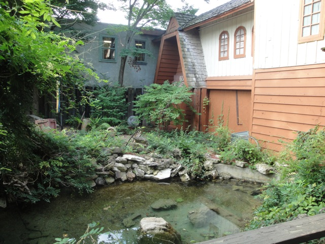
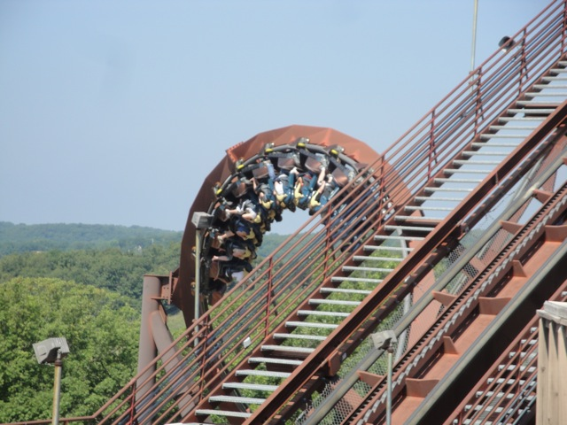
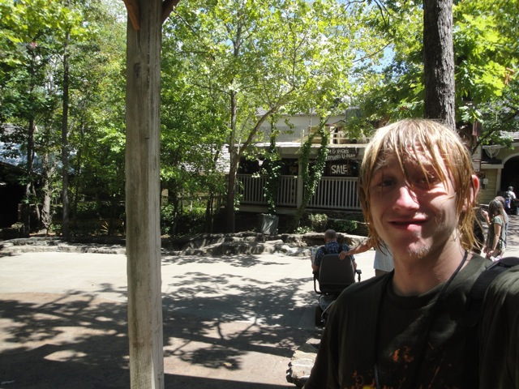
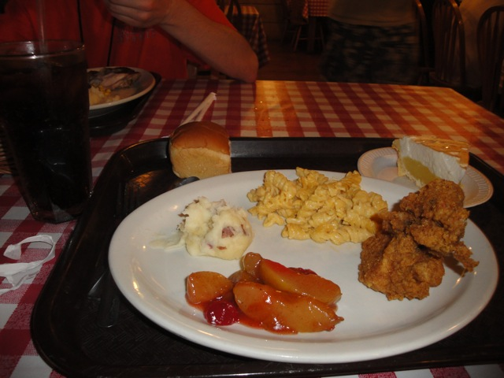
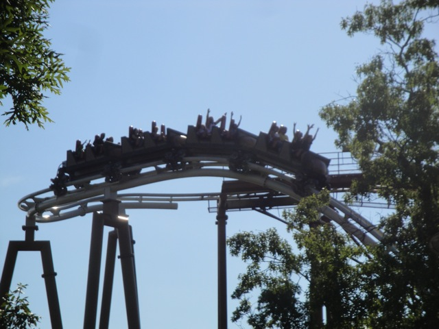
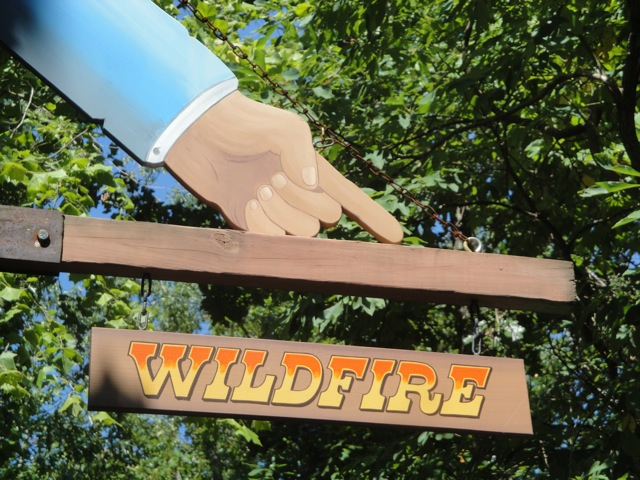
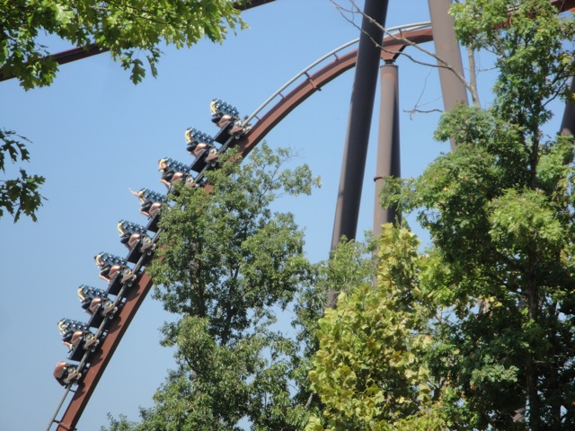

Ok. That's really depressing. We need something to cheer us up.
That'll do the trick.
Today was an awesome day at Silver Dollar City.
Don't believe me, just look at our schedule for today.

This place is stunningly beautiful.
They really nailed the 1800s town look down.
Just to let you know where we are.
Yikes. Look at all that funky jerky they have. I should've tried the Kangaroo Jerky.
Oh well. Enough of that. We have rollercoasters to ride.
This ride was awesome.
Another thing that people rave about here is their Cinnamon Bread.
Surely, it's just bread. It can't be THAT good?
"Holy Sh*t!!! This stuff is amazing!!!!"
Up next, Fire in the Hole.
It may not count as a credit.
But that doesn't mean this wasn't a kickass dark ride. "FIRE IN THE HOLE!!!!!!"
Where can I find this attraction? I can't find it on the park map.
Yay! Now it's time for us to ride Wildfire!! =)
Heading straight up the lifthill.
It's no Kumba, but Wildfire is still one kickass B&M.

"Hey! I didn't think this ride had arm banging!!! Wait, how is this even possible?"
No wait, that was just a bee stinging me in the arm on the ride. And the bee was still attached to the stinger. So that made for a very interesting meet and greet.
Hey, at least it wasn't a goose that attacked me.
(Photo by Robb Alvey)
I may have been stung, but I lived to tell the tale. Incrediblecoasters 1. Bee 0.
(Photo by Robb Alvey)
All right. Next up, Giant Barn Swing.
Hmm. This just looks like an ordinary mine train.
Not only is this mine train more insane than any other mine train, but you can also ride it backwards!!
Aww. River Blast broke down on us.
In that case, time to get the final credit here.
Cha Ching.
The Disk-O here is actually a pretty insane one.
"Teacups anyone?"
Aww. Nothing refreshes you like a nice Cherry Coke Icee. (Yes, you can make that thanks to the beauty of the self mixing Icee Machine.)
Sweet!! River Blast opened back up for us!!!

You know, considering that this is a Splash Battle, this is an acceptable amount of wetness.
I think I've got wet enough today, thank you very much.
Back to the giant barn swing.
These things are awesome.
This park's sense of humor is awesome.
You two keep milking that cow, I'll go get the Cocoa Puffs.
Sweet. Time for the park's shooting dark ride.
"Can I take these guns back home to Australia?"
Oh my god. The food here is phenomonal. Everything in that skillet is awesome.
This park may have drained all the money left in my wallet after buying my new camera, but dammit! It was worth it.
"Hey Grandpa. We just popped back in Ventura to give you a quick visit."
Hmm. Something about this isn't right.
"Hey Grandpa. If this is what you did to the inside of your house, then I'm really looking foreword to seeing what you did to that farm in the backyard."
Like I said before, this place is awesome.
If I could, I would.

Dinner was awesome. This time during trivia, I won a book.
All right!! Back to Powder Keg.

If someone said "I want to go on something more thrilling than California Screamin, but not nearly as insane as Maverick", you'd pretty much get Powder Keg right there.
Powder Keg Twistiness,
"EXCITEMENT!!!! 3 2 1!!!!!!"
All right. What's American Plunge?
I think I'll pass.

I'll just stick to Wildfire, thank you very much.

This may not be as crazily forceful as Kumba, but hey. Kumba doesn't have ejector air on the first drop. ;)
Look out for those bees. They're gonna get you.
Wildfire is one kickass B&M that will be here to stay for a very long time.
All those excuses are lame. Get your ass on Wildfire.
Did I mention that Silver Dollar City is beautiful?
Hey SFMM, why not give Goldrusher a little special Thunderation treatment. ;)
What exactly is the Marvel Cave you ask?
The Marvel Cave is an actual cave that Silver Dollar City owns and gives tours to. And it's not an upcharge. =)
Welcome to hell. (Seriously, the local indians originally thought that this was the entrance to hell.)
Silver Dollar City is amazing.
Well, I now know that this is not hell. (If it was, I would be forced to ride Dragon repeatedly while being forced to sit next to Satan herself.)
Yeah. We at Incrediblecoasters would not recommend the Cave Tour to anyone with Claustrophobia.
Even an object the size of an atom?
Ha Ha!!! I fooled you all!!! This really is hell. The three stooges lead by the devil herself will soon escort you all to Dragon where you will ride it till your skull is crushed into a million peices.
Am I really at an amusement park?
Unfortunetly, my tour was the last tour to ever feature the bats. =(
Then when it's all over, the whole tour is crammed into this tiny little tram and you get dragged back up to civilization.
And finally, I've noticed that Mello Yello actually exists here in the Midwest. They even had it at the McDonalds in Wisconson. Please come to CA Mello Yello. I miss you.